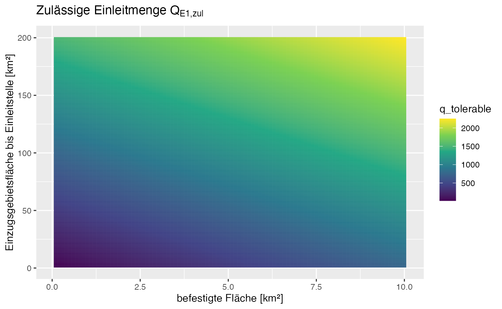

library(ggplot2)
library(tidyr)
# Example plot:
grid <- tidyr::expand_grid(area_catch = 1:200, area_con_catch = seq(.1, 10, .1))
grid$q_tolerable <- 1
grid$allowed_area_con <- 1
grid$allowed_fD <- 1
for (i in 1:nrow(grid)){
grid$q_tolerable[i] <- r2q::get_q_max(
area_catch = grid$area_catch[i],
area_urban = grid$area_con_catch[i],
Hq1pnat_catch = 75, x = 0.1)
grid$allowed_area_plan[i] <- grid$q_tolerable[i] / (150 * 0.7)
grid$allowed_fDA[i] <- grid$q_tolerable[i] / (150 * grid$area_con_catch[i])
}
#> Warning: Unknown or uninitialised column: `allowed_area_plan`.
#> Warning: Unknown or uninitialised column: `allowed_fDA`.
ggplot(grid, aes(x = area_con_catch, y = area_catch,
col = q_tolerable, fill = q_tolerable))+
geom_tile()+ scale_color_viridis_c() + scale_fill_viridis_c() +
xlab("befestigte Fläche [km²]") +
ylab("Einzugsgebietsfläche bis Einleitstelle [km²]") +
ggtitle(bquote("Zulässige Einleitmenge" ~Q[E1][','][zul]))